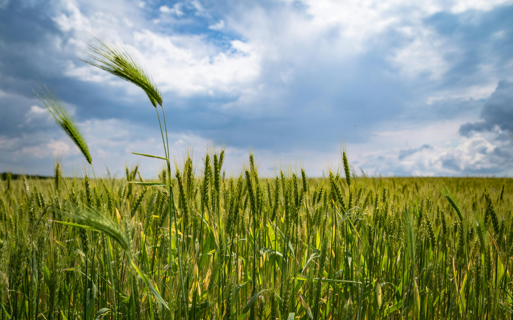

Welcome to Agrivision, your premier destination for accurate crop predictions . At Agrivision, we understand the critical role that reliable agricultural forecasts play in the success of farming ventures. Leveraging cutting-edge technology and data analytics, we provide farmers, agricultural businesses, and policymakers with invaluable insights to make informed decisions and optimize crop management practices.. Whether you're planning planting schedules, assessing market conditions, or mitigating risks associated with weather fluctuations, our platform equips you with actionable intelligence every step of the way. By empowering stakeholders with timely and accurate information, Agrivision fosters sustainable farming practices, promotes food security, and drives innovation in the agricultural sector. Join us in shaping the future of farming with data-driven insights and unlock the full potential of your agricultural endeavors.


Our crop recommendation system harnesses the power of artificial intelligence to revolutionize farming practices. By analyzing a multitude of factors including soil nutrient levels, weather conditions, and historical crop performance data, our AI-driven platform provides personalized recommendations to farmers, empowering them to make data-driven decisions for optimal crop selection.
Read More